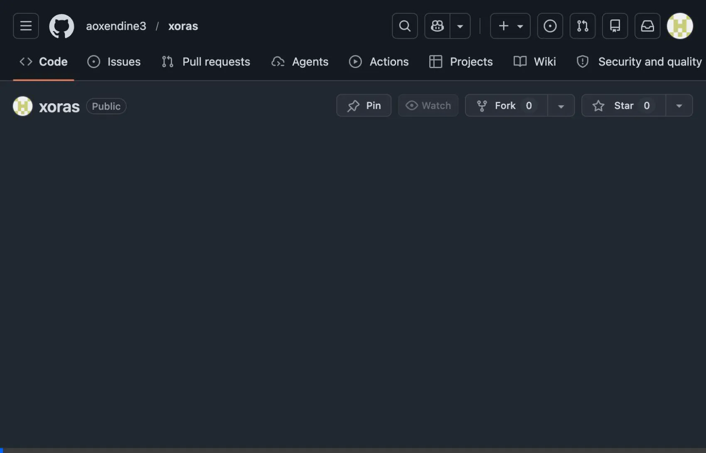

XORAS surfaces release drift directly inside your CI pipeline—detecting performance regressions and security leaks before they reach production.
Apply for the 30-Day Advisory PilotXORAS monitors your institutional baseline across four critical categories.
Detect latency regressions and TTFB degradation caused by inefficient code paths before merge.
Enforce architectural discipline by flagging unnecessary packages and massive bundle size growth.
Intercept exposed API keys and credentials directly in the PR workflow with zero false positives.
Ensure every release meets institutional standards for security headers, CORS, and configuration.
See how XORAS catches a latency regression and an exposed secret in real-time.

A frictionless, no-blocking introduction to release integrity.
Deploy the XORAS GitHub Action in Advisory Mode. Setup takes under 3 minutes.
Observe silent regressions and measure drift frequency without blocking a single build.
Receive weekly governance reports showing exactly what XORAS caught before production.
Limited to 30 engineering teams for the Q2 cohort.